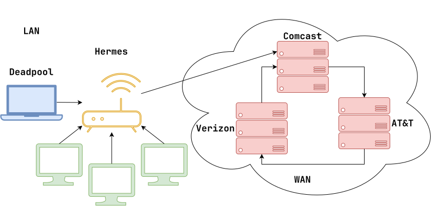
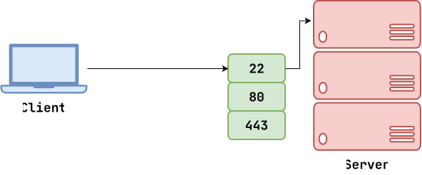

Logistics¶
-
Exam 01: Grades are on Canvas, will pass back on Monday, after last person takes it.
- Grades are not important, work hard, keep improving
- No shortcuts: practice, practice, practice
- Extra Credit 01
New Schedule: Slow down to focus on fundamentals of Software Systems (how to use and how they work).
- We will still build a small one at the end.
- Provide scaffolding, structure, and opportunities to develop skills.
- Reading 04 finally out!
- Homework 04 later this weekend...
Networking: Internet¶

- Router is like the mailman in dorm (directs messages)
- Internet is a network of networks (graph)
Networking: Client / Server¶

What is my IP address?¶
$ ip addr $ ip -br addr $ ifconfig- Discuss: IPv4 has
48-bit (0-255) integers ~4billion possible IPs. - Discuss: Almost every machine has
localhost(ie.127.0.0.1). - Discuss: Private addresses (ie.
192.168.x.x,10.x.x.x).
What is the IP address of another machine?¶
$ host google.com $ dig nd.edu- Discuss: DNS is like the phonebook,
/etc/hosts. - Demonstrate: Open IP address in web browser.
What services are running?¶
# Show listening ports (current host) $ ss -tlpn# Scan listening ports (another host) $ nmap -v -Pn student11.cse.nd.edu $ nmap -v -Pn -p 1000-2000 student11.cse.nd.eduHow do I retrieve something from the web?¶
# Start HTTP server and then connect via web browser $ echo Hello, World > index.txt $ python3 -m http.server 9999# Connect to host and talk to HTTP directly $ nc localhost 9999 GET / HTTP/1.0 ... # Connect to host and talk to HTTP directly $ nc google.com 80 GET / HTTP/1.0 Host: www.google.com ...- Discuss: Unix Philosophy!
- Discuss: View Page Source
# Download linux kernel $ wget https://cdn.kernel.org... $ curl -LO https://cdn.kernel.org... # Write HTTP response to stdout $ curl -sL https://www.example.comNetworking: Bandwidth / Latency¶
- Latency: Delay or lag (ms)
- Bandwidth: Capacity (MB/s)
How do I measure bandwidth (capacity) vs latency (delay)?¶
# Measure latency (response time) $ ping google.com $ ping 4chan.org $ ping baidu.com # Measure how many hops $ traceroute google.com $ traceroute 4chan.orgHow do I transfer files between machines?¶
# Copy file to remote host $ sftp pbui@student10.cse.nd.edu > put /etc/hosts > ls > get hosts # Copy file to remote host (scp) $ scp /etc/hosts pbui@student10.cse.nd.edu:test.txt # Copy file to remote host (rsync) $ rsync -av --progress /etc/hosts student10.cse.nd.edu:test.txt